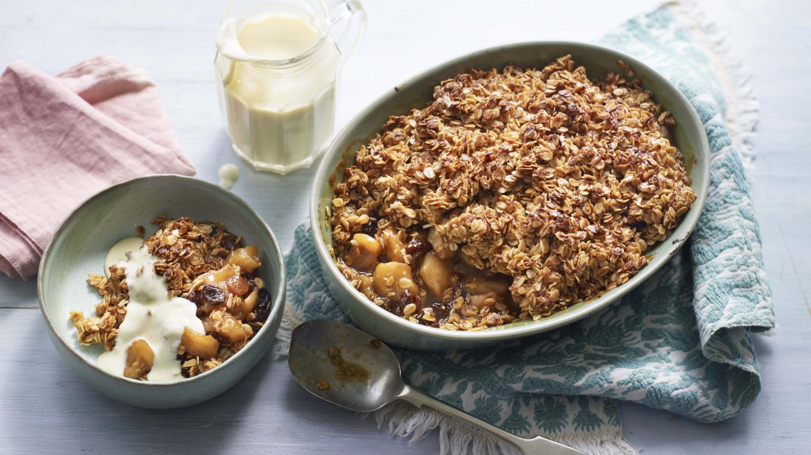

Flapjack Apple Crumble
,
Description
Decadent apple crumble laced with cinamon
Ingredients
- 250g/9oz porridge oats
- 1kg/2lb 4oz Granny Smith or cooking apples, peeled, cored and cut into chunks
- 1 tsp cinnamon
- 50g/9oz porridge oats
- 100g/3½oz muscovado sugar
- 100g/3½oz golden syrup
- 125g/4½oz unsalted butter
Steps
- Preheat the oven to 150C/130C Fan/Gas 2.
- For the crumble topping, spread the oats on a large baking tray and bake for 10–15 minutes, stirring once, until they are toasted and golden in colour. Once toasted, put the oats into a bowl and add the lemon zest. Leave the oven on.
- Melt the butter, sugar and syrup in a saucepan over a medium heat until the sugar has dissolved. Pour over the oats, give it a good mix and set aside.
- Put the apples, butter, cinnamon, 1 tablespoon of sugar and the lemon juice into a pan. Cook for about 10 minutes on a medium heat, until the apples have softened slightly. Stir in the cornflour and raisins, then tip the mixture into a 25cm/10in square or round ovenproof baking dish. Top with the flapjack mix in an even layer. Bake on the middle shelf of the oven for 40–45 minutes.